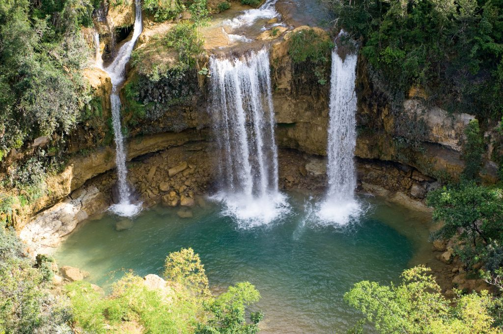

Zona Colonial - Santo Domingo
Es un Patrimonio de la Humanidad que alberga los primeros vestigios de la colonización europea en América. Con monumentos emblemáticos como la Catedral Primada de América, el Alcázar de Colón y la Fortaleza Ozama, esta área ofrece una mezcla única de historia, cultura, museos y tiendas.
Centro histórico del Distrito Nacional, Santo Domingo, República Dominicana.
Parque Nacional Los Haitises
Un paraíso ecológico ubicado en la región noreste del país, famoso por sus impresionantes mogotes, cuevas con arte taíno y abundante biodiversidad. Los Haitises es un destino ideal para los amantes de la naturaleza y la aventura, con excursiones en bote a través de sus manglares y visitas a sus cavernas históricas.
Ubicación: Provincias de Samaná, Monte Plata y Hato Mayor.

Salto Alto
Un hermoso conjunto de tres cascadas ubicadas en Bayaguana, ideales para nadar y disfrutar de la naturaleza. Este destino es perfecto para quienes buscan una experiencia tranquila rodeada de vegetación tropical y aguas cristalinas.
Ubicación: Bayaguana, Monte Plata, República Dominicana.
Altos de Chavón
Un pueblo de estilo mediterráneo del siglo XVI construido en la década de 1970. Altos de Chavón es un importante centro cultural con galerías de arte, un museo arqueológico y un anfiteatro que ha recibido a artistas de renombre internacional.
Ubicación: La Romana, República Dominicana.